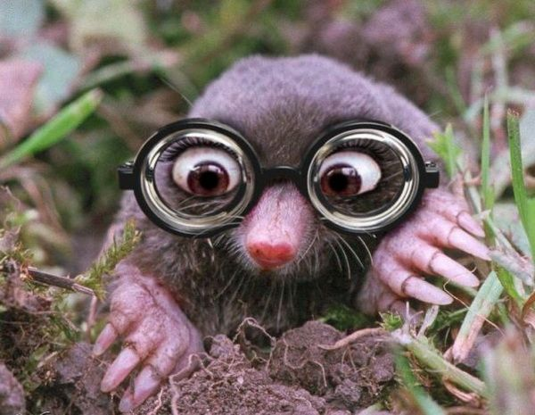

Wack-a-Mole: Tkinter Edtion
Instructions
The program recreates the famous arcade game inside the context of a GUI (Graphical User Interface) using the Python library Tkinter. To play, hit the green start button and click any buttons that change color and say 'click me' as quickly as you can.
Executable File (The program will need a second to load everything, no need to type anything)Source Code